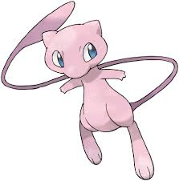

Mew the Ancestor of Pokemon. The 151st pokemon in the pokedex and a pokemon only available through cheats or special real world events in the first game. Being the Ancestor of modern
Pokemon and the first event Pokemon. Being the Ancestor of all Pokemno would mean that Mew would be the very first species of pokemon. All though he can not be obtained through legitimate means in the Game he still exists and is a legitimate
choice for the first pokemon.